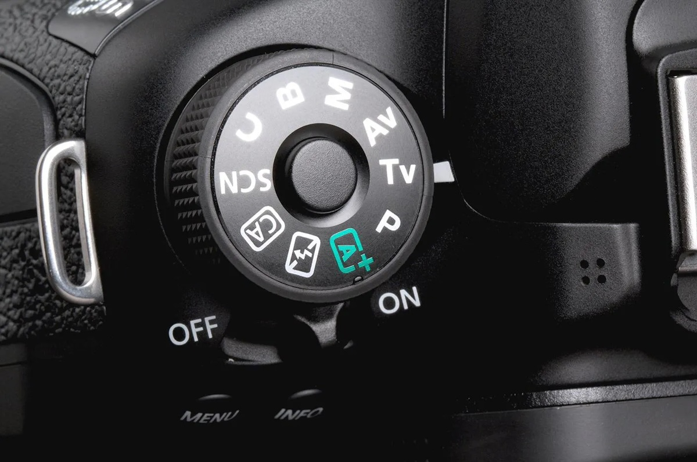

Enstantane Nedir? Fotoğrafçılıkta Enstantane Kullanımı ve İpuçları
Fotoğrafçılıkta teknik detaylar kadar estetik unsurlar da büyük önem taşır. Teknik bilgiye hakim olmak, daha etkili ve yaratıcı fotoğraflar çekebilmenizi sağlar. Bu tekniklerden biri olan enstantane, hareketi yakalamak ya da dondurmak için fotoğraf makinenizin obtüratör hızını ayarlamanıza olanak tanır. Peki, enstantane nedir ve fotoğrafçılıkta nasıl kullanılır? Bu yazımızda, enstantane kavramını detaylarıyla ele alacağız.
Enstantane Nedir?
Enstantane, fotoğraf makinesinin obtüratörünün açık kaldığı süreyi ifade eder. Obtüratör hızı, saniyenin kesirleriyle ölçülür ve bu süre ne kadar kısa olursa, hareket o kadar hızlı dondurulabilir. Enstantane hızı, fotoğrafçının çektiği nesnenin hareketini dondurmasına veya bulanıklaştırmasına yardımcı olur. Hareketli bir nesnenin keskin bir şekilde yakalanması ya da hareketin akışını göstermek için bilinçli bir bulanıklık yaratılması tamamen enstantane ayarlarına bağlıdır.

Enstantane Nasıl Ayarlanır?
Fotoğraf makinenizde manuel mod veya yarı otomatik mod kullanarak enstantane hızını ayarlayabilirsiniz. Eğer hızlı hareket eden bir nesneyi net bir şekilde yakalamak istiyorsanız, yüksek enstantane hızı tercih edilmelidir. Örneğin, spor müsabakalarını çekerken 1/1000 saniye ya da daha hızlı bir enstantane kullanmak gerekir. Öte yandan, su akıntısı veya ışıkla boyama gibi uzun pozlama gerektiren çekimlerde daha yavaş enstantane hızları, 1 saniye veya daha uzun süreler kullanılabilir.

Hızlı Enstantane Kullanımı
Hızlı enstantane, hareketli objeleri net bir şekilde yakalamak için idealdir. Spor, doğa, kuş fotoğrafçılığı gibi konularla ilgilenen fotoğrafçılar, genellikle daha yüksek enstantane hızlarını tercih ederler. Böylece hızlı hareket eden objeler bile net bir şekilde görüntülenebilir. Yüksek enstantane hızları, ayrıca titreme riskini de minimize eder.

Yavaş Enstantane ile Yaratıcı Çekimler
Daha yavaş enstantane hızları ise daha fazla hareket bulanıklığı yaratır. Bu teknik, özellikle uzun pozlama ile fotoğraf çekimlerinde oldukça popülerdir. Yavaş enstantane kullanarak akan suyu ipeksi bir dokuya dönüştürebilir veya gece çekimlerinde araç farları gibi ışıkları uzun çizgiler halinde yakalayabilirsiniz. Ayrıca yavaş enstantane ile yapılan çekimlerde, sabit bir tripod kullanmak oldukça önemlidir.

Enstantane ve Diyafram İlişkisi
Enstantane ayarı, fotoğrafın pozlamasını doğrudan etkileyen üç temel faktörden biridir. Enstantane, diyafram ve ISO birlikte çalışarak pozlamayı oluşturur. Örneğin, hızlı enstantane kullanırken daha az ışık gireceği için, diyaframı daha geniş (düşük f/stop değeri) ayarlayarak bu açığı kapatabilirsiniz. Bu nedenle enstantane, diyafram ve ISO arasında denge kurmak, doğru pozlamayı elde etmek için kritik bir beceridir.
Hareketin Dondurulması ve Vurgulanması
Hangi enstantane hızını kullanmanız gerektiği, fotoğrafını çektiğiniz nesnenin hareket hızına ve yaratmak istediğiniz etkiye bağlıdır. Hareketi dondurmak istiyorsanız hızlı bir enstantane (örneğin, 1/1000 saniye) kullanarak net ve keskin fotoğraflar elde edebilirsiniz. Ancak, hareketi vurgulamak veya akışkanlık hissi vermek istiyorsanız daha yavaş enstantaneler (örneğin, 1/15 saniye) tercih edilebilir.

Enstantane Hızını Test Etmek
Farklı enstantane hızlarını denemek, hangi durumlarda hangi hızın en iyi sonucu verdiğini anlamak açısından önemlidir. Deneme yanılma yöntemi, fotoğrafçılıkta enstantane hızını öğrenmenin etkili bir yoludur. Ayrıca, ışık koşullarını ve çekim yaptığınız ortamı göz önünde bulundurarak enstantane ayarlarını değiştirmek, daha yaratıcı sonuçlar elde etmenizi sağlar.
Doğru Ekipman Kullanımı
Enstantane hızını etkili bir şekilde kullanmak için doğru ekipmana sahip olmak da önemlidir. Tripod, yavaş enstantane ile çekim yaparken fotoğrafın bulanık çıkmasını önlemek için gereklidir. Ayrıca, hızlı enstantane kullanırken düşük ışık koşullarında çekim yapıyorsanız, yüksek ISO performansına sahip bir kamera da işinizi kolaylaştırır.
Enstantane ve Pozlama Üçgeni
Fotoğrafçılıkta pozlama üçgeni terimi, enstantane, diyafram ve ISO’nun bir arada nasıl çalıştığını açıklayan bir kavramdır. Enstantane hızını ayarlarken, bu üç öğe arasında denge kurmak gerekir. Yavaş enstantane kullanırken, daha fazla ışık almak için diyaframı açmak veya ISO’yu artırmak gerekebilir. Bu nedenle, doğru pozlamayı elde etmek için enstantane hızını diğer ayarlarla dengelemek şarttır.
Enstantane İle Yaratıcılığınızı Keşfedin
Enstantane, fotoğrafçılığın temel taşlarından biridir ve hem teknik hem de sanatsal açıdan önem taşır. Hangi enstantane hızını kullanacağınıza karar vermek, fotoğrafın sonucunu doğrudan etkiler. Hareketi dondurmak, akıcı bir görüntü yaratmak veya ışığı farklı şekillerde kullanmak için enstantane ayarlarıyla oynamak, fotoğrafçılığınızı bir üst seviyeye taşıyabilir. Deneyerek ve pratiğe dayalı bir yaklaşım benimseyerek, enstantane ile yaratıcılığınızı keşfedin!